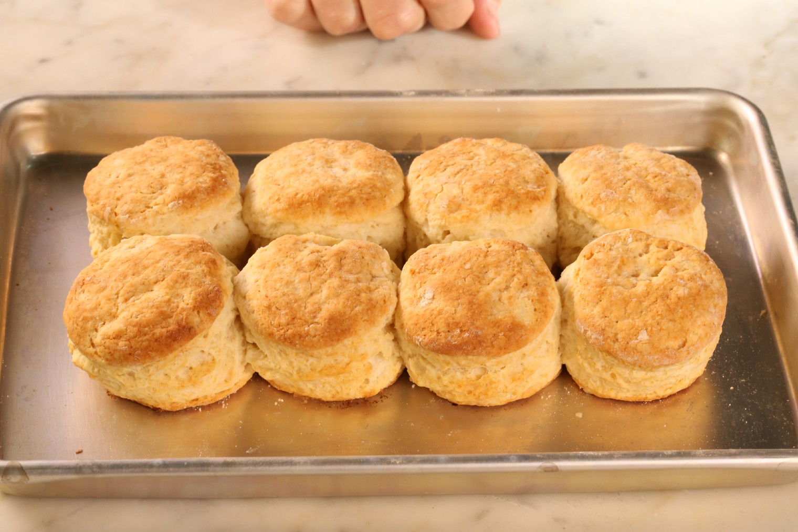

Homemade Southern Biscuits

Description
This is my favorite biscuit recipe. It makes 12 biscuits.
Ingredients
- 2 cups all-purpose flour
- 4 teaspoons baking powder
- 1/4 teaspoon baking soda
- 3/4 teaspoon kosher salt
- 2 tablespoons unsalted butter, chilled
- 2 tablespoons unflavored shortening, chilled
- 1 cup buttermilk, chilled
- 1 cup milk
- 1 tablespoon lemon juice
- mix and let sit for ~15 minutes
Directions
- Heat the oven to 450°F.
- In a large mixing bowl, combine flour, baking powder, baking soda and salt. Using your fingertips, rub butter and shortening into dry ingredients until mixture looks like crumbs. (The faster the better, you don't want the fats to melt.) Make a well in the center and pour in the chilled buttermilk. Stir just until the dough comes together. The dough will be very sticky.
- Turn dough onto floured surface, dust top with flour and gently fold dough over on itself 5 or 6 times. Press into a 1-inch thick round. Cut out biscuits with a 2-inch cutter, being sure to push straight down through the dough. Place biscuits on baking sheet so that they just touch. Reform scrap dough, working it as little as possible and continue cutting. (Biscuits from the second pass will not be quite as light as those from the first, but hey, that's life.)
- Bake until biscuits are tall and light gold on top, 15 to 20 minutes. Serve hot.
Nutrition Facts
Per Serving: 121 calories; protein 3g; carbohydrates 17g; fat 4.5g; cholesterol 6mg; sodium 331mg.
Link